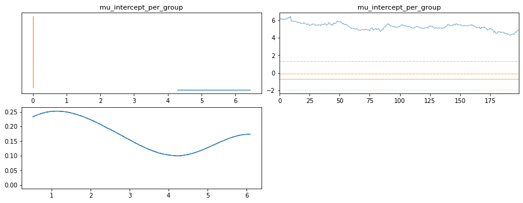

Neurons example with nominal stim strengths¶
Generate some data¶
from bayes_window import models, fake_spikes_explore, BayesWindow, BayesRegression
from bayes_window.generative_models import generate_spikes_stim_strength
from importlib import reload
import numpy as np
import altair as alt
/opt/hostedtoolcache/Python/3.7.12/x64/lib/python3.7/site-packages/jax/experimental/optimizers.py:30: FutureWarning: jax.experimental.optimizers is deprecated, import jax.example_libraries.optimizers instead
FutureWarning)
/opt/hostedtoolcache/Python/3.7.12/x64/lib/python3.7/site-packages/jax/experimental/stax.py:30: FutureWarning: jax.experimental.stax is deprecated, import jax.example_libraries.stax instead
FutureWarning)
df = generate_spikes_stim_strength(mouse_response_slopes=np.arange(5, 40, 5),
n_trials=20,
n_neurons=6,
n_mice=3,
dur=5,
# mouse_response_slope=40,
overall_stim_response_strength=5)
---------------------------------------------------------------------------
TypeError Traceback (most recent call last)
/tmp/ipykernel_8496/3547085448.py in <module>
5 dur=5,
6 # mouse_response_slope=40,
----> 7 overall_stim_response_strength=5)
/opt/hostedtoolcache/Python/3.7.12/x64/lib/python3.7/site-packages/bayes_window/generative_models.py in generate_spikes_stim_strength(overall_stim_response_strengths, **kwargs)
62 df = []
63 for overall_stim_response_strength in overall_stim_response_strengths:
---> 64 df1 = generate_fake_spikes(overall_stim_response_strength=overall_stim_response_strength, **kwargs)[0]
65 df1.insert(0, 'stim_strength', df1['stim'] * overall_stim_response_strength)
66 df.append(df1)
TypeError: generate_fake_spikes() got multiple values for keyword argument 'overall_stim_response_strength'
window = BayesRegression(df=df, y='isi', treatment='stim_strength', condition='neuron_x_mouse', group='mouse')
window.fit(do_make_change=False, dist_y='gamma', progress_bar=True,
add_group_slope=True
)
window.chart
window.posterior['slope_per_condition']
window.plot_model_quality()
